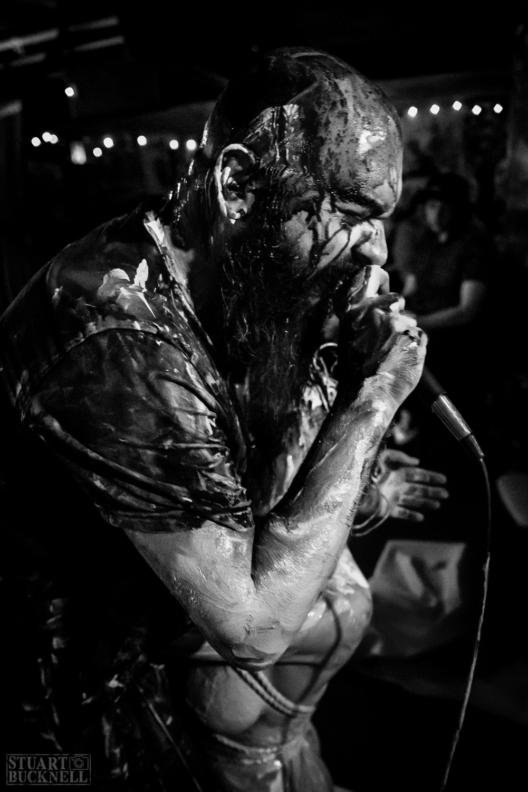

Downloads
Individual Track MP3s
Download the folder containing the album tracks as MP3s.
Open Google Drive FolderPrivate Access
This page contains a private advance EPK stream intended for labels, media, promoters, and industry contacts.
Cheap Coffins
I AM MARA, the new record from Cheap Coffins, is based around the oldest story. It is the tale of the first "self", the first moment in human history where a previously collective consciousness became splintered, by recognising its separateness as reflected in a pool of water in a cave.
Musically, the record is dark, intricate, interesting, at times confronting. Sometimes brutal, sometimes fraglie, I AM MARA encompasses the full spectrum of dark and alternative music, from the gentle whispers beginning VIOLENT, IRRATIONAL, AND INHERENTLY UNPREDICTABLE, to the emotional screams and wails finishing MIDNIGHT SUN, to the industrial mechanations of THE TRANSFORMATION OF OLYMPIA.

Private Stream
Private streaming preview.
Downloads
Download the folder containing the album tracks as MP3s.
Open Google Drive FolderDownloads
Download the full gapless version of the record as a single MP3.
Open Full Album MP3Album Overview
1. Of Two
2. Midnight Sun
3. Alpha-137
4. Violent, Irrational, and Inherently Unpredictable
5. (into the cave)
6. Spit Rape
7. The Transformation of Olympia
8. Tri Thula
9. (kismet)
Band / Project Background

Cheap Coffins is a one-man alternative / electronic / progressive / industrial band from Dharawal (Wollongong), Australia. He performs using a combination of live and MIDI instruments, looping together vocals, guitars, drums, samples, synths and keys to single-handedly create the massive sound of a full band.
The project was born out of the desire to experience the joy of creativity, to tap into that mysterious source of inspiration, and to share with the world whatever flows through. This musical experimentation has led to the creation of a collection of music which is as epic and cathartic as it is interesting and thought-provoking.
Live
"I have never seen anything like that before."
This tends to be the usual reaction to witnessing the performance of CHEAP COFFINS, the one-man metal / industrial / alternative machine from Dharawal / Wollongong.
His live shows combine the energy of an underground hardcore show with the theatrics of a serial killer's nightmare. It is not uncommon to see him stomping around the stage, dripping with paint and sweat, swinging from a noose, playing with knives and destroying his own props, all for the purpose of being lost in the moment of live performance. A near-transcendent state which the audience cannot but help be drawn into themselves.
CHEAP COFFINS' sound spans genres, fusing heavy tribal drums with chugging guitar riffs, fast-paced beats over furious synths, aggressive vocals over industrial noises. The sound of a million infuriated wasps living in the corpse of a nuclear-powered robot. The soundtrack to a movie that never existed. Part Nine Inch Nails, part Gojira, part Author & Punisher, part Tool.
Whether performing by himself, or collaborating with other artists and performers on stage, such as his oft-collaborator LIBERTE LA FEMME, CHEAP COFFINS bridges a genuine connection between himself, the music, and the audience, in a way that unifies all involved for a few precious moments in time.

Contact
Contact: Troy Koglin
Email: cheapcoffinsband@gmail.com
Socials: instagram.com/cheapcoffins